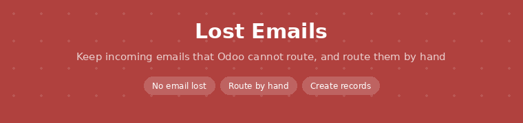
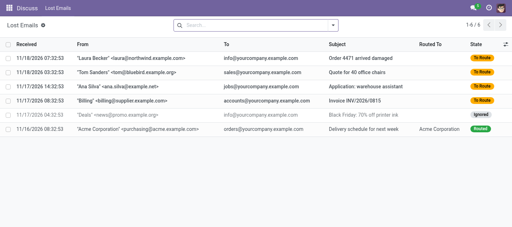
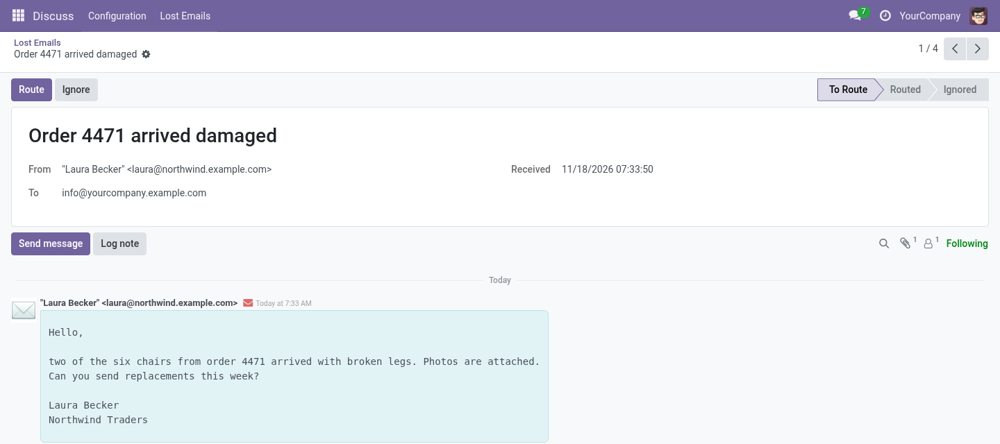
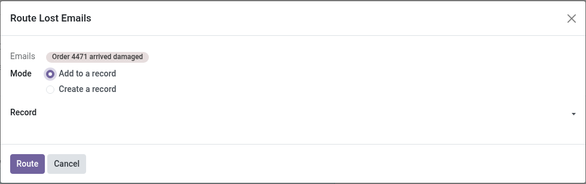

When an email reaches Odoo and matches no alias and no record, Odoo bounces it or drops it, and nobody in the company sees it. Lost Emails keeps every one of them in a list, so someone can move it to the right record.
Odoo 18.0 Community & Enterprise Free · LGPL-3

Emails sent to addresses Odoo does not know, kept in Discuss › Lost Emails instead of bounced.
Emails that match no alias, no reply thread and no default model are kept, and so are new emails written to the catchall address, from incoming mail servers and the mail gateway alike.
Sender, To, Cc, subject, body and attachments show in the chatter, and the original email is kept for routing.
Add one or several emails to a contact, or any record with a chatter, as if the email had arrived there. Attachments go with them.
Pick a type, and the email becomes a new record named after its subject, the way an email alias creates one.
Once an email is routed, the sender's replies to it go straight to the same record.
Users in the Lost Emails Manager group follow every lost email and get notified. Nobody else can read them.

Each lost email: who sent it, to which address, and the full message with attachments.

Route: add the email to a record, or create a new one from it.
Free and open source (LGPL-3) by Paulius Gaizauskas · Questions or bugs: GitHub issues